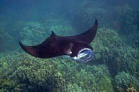

Habitad

Hay dos especies de mantarraya: la mantarraya del arrecife, que se encuentra en las aguas costeras tropicales y subtropicales, y la manta más grande del mundo, la mantarraya oceánica gigante, que migra por las aguas abiertas del mundo.
Caracteristicas
Pueden medir alrededor de 9 metros
- pesar hasta 1,300 kilos
- El cuerpo de la mantarraya tiene una forma muy particular, con enormes aletas triangulares y unas prolongaciones en la cabeza que parecen unos cuernos
- Tienen la piel muy suave
- a diferencia de otras rayas, su cola no posee aguijón venenoso.
menú